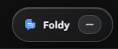

Panel flotante, carpetas con auto-reglas y chats ocultos.
Crea carpetas con color propio y reglas de palabras clave para clasificar conversaciones automáticamente. Arrastra chats sobre cualquier píldora con Deshacer de 5 segundos, oculta hilos sin borrarlos y minimiza el panel a una cápsula discreta cuando necesites pantalla completa.
- Búsqueda instantánea sin retardo con atajo Alt+Shift+S y orden por recientes.
- Píldora dedicada Ocultos para despejar tu barra lateral sin perder contexto.
- Arrastre libre con márgenes seguros de 8 px para que el panel nunca se escape.
Buscar conversación...
Todas 14
Programación 5
Investigación 4
Producto 3
Diseño 2
Ocultos 6
